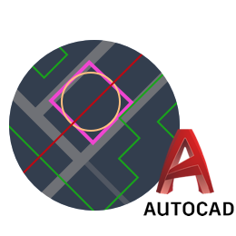

专业地理规划软件
为企业提供先进的规划设计工具，为大众提供准确、专业、高效的位置分享平台
同时支持多种知名地图
目前已集成了Google地图与卫星图、Bing卫星图、百度地图、OpenCycle等高线地图等多种知名地图，用户可自由切换并离线使用这几种地图。
三维地图
结合卫星图与高程数据，自动进行快速3D建模。优秀的3D加载与显示引擎无比流畅地为您展现全球真实地形。

地理规划
奥维地图为您提供规划设计的常用工具，您可以在地图直接做各种规划设计—画点、画线、画多边形、画圆、画曲线、做标记、填充区域等等。

位置与轨迹分享
和好友分享自己的行走轨迹；也可以根据分享的位置，指导好友走出迷途！跟踪好友位置，随时对话，及时了解各自方位。
高程数据服务
奥维地图云端集成了SRTM3、ASTER-GDEM2全球高程数据，您可以快速查询全球任意位置的海拔高度。奥维地图的高程服务还可在卫星图上直接输出10米精度的等高线，让您在看卫星图时直观了解海拔信息。

AutoCAD无缝对接
奥维地图可直接读取CAD设计文件并将其转化为奥维对象，将您的设计展现在地图之上；也可以将奥维浏览器图片及奥维对象直接转换为CAD底图与矢量对象，让您进一步在CAD上做精细设计。
大数据支持
允许在地图上同时展现百万级的奥维对象；支持高达64TB海量地图数据。极其优秀的地图显示引擎让您在大数据时代畅通无阻。
跨平台
全面支持微软、苹果、安卓等主流平台，您在PC上的各种地理规划设计可以快速同步到手机平台上，在移动端现场采集到的数据也可快速同步到电脑上。